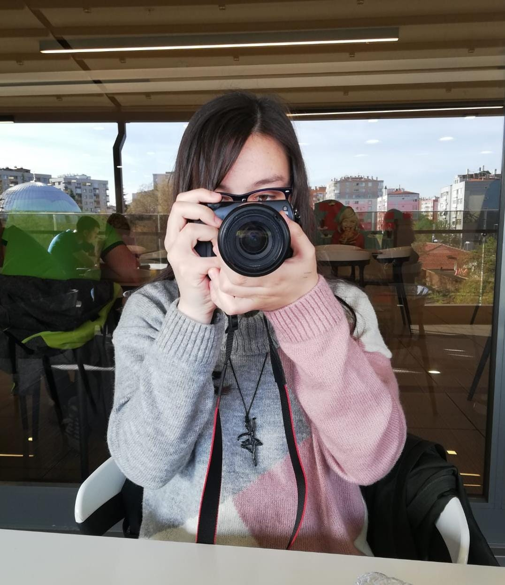
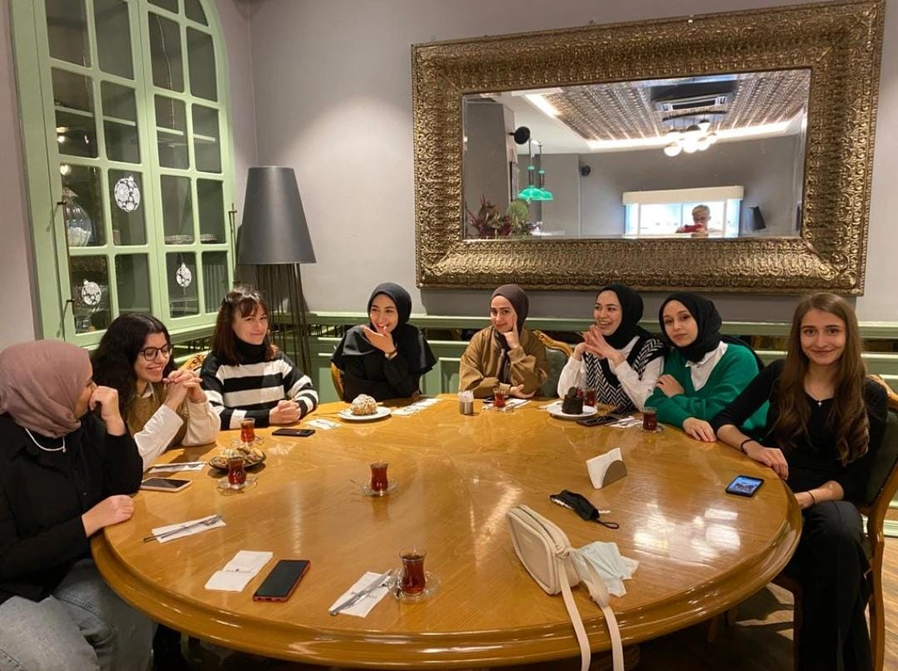
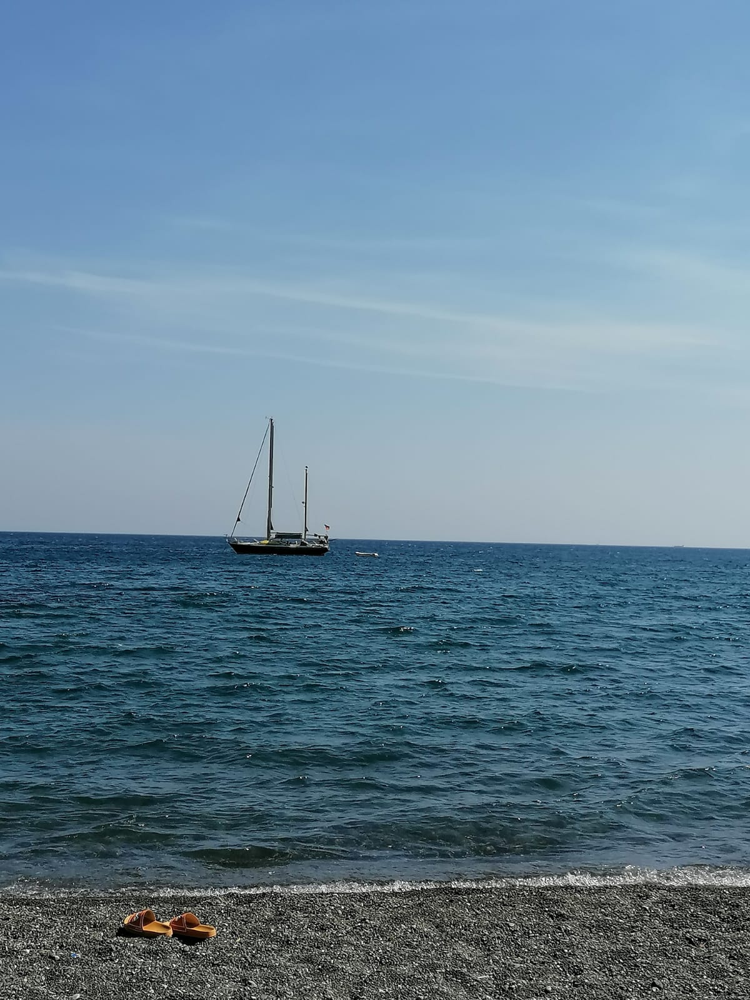
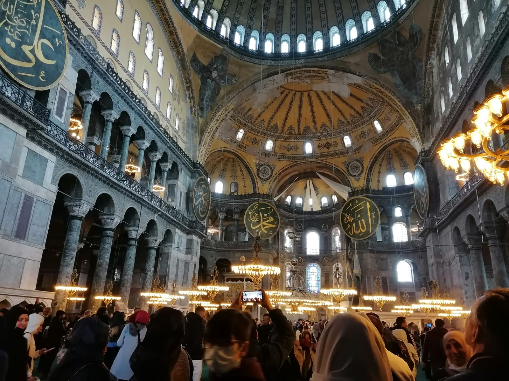
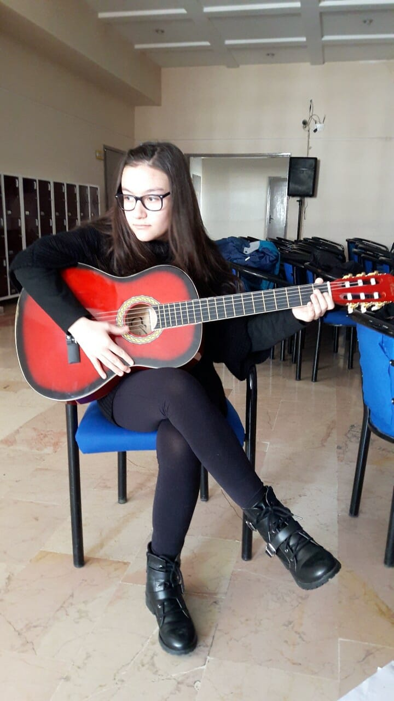

Merhaba, ben Ayşegül Bilici. 24 Haziran 2002'de Konya'da doğdum.
Ailemin ilk çocuğuyum. Sakarya Üniversitesi'nde Bilgisayar Mühendisliği
okuyorum ve henüz 1. sınıfa gidiyorum.





Hobilerimden bahsedecek olursam; fotoğraf çekmeyi, arkadaşlarımla vakit geçirmeyi, yeni yerler görmeyi,keşfetmeyi,
kitap okumayı, kültürel mekanları gezmeyi, gitar çalmayı... çok severim.